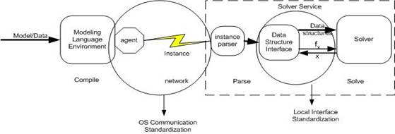

|
Optimization Services Communication
OS communication is about the exchange of a set of low-level data instances between different Optimization Services components.
The Optimization Services framework standardizes all the communications between any two Optimization Services components on an OS distributed system. The framework itself does not standardize local interfacing. Derived researches from Optimization Services (§4.6) are intended to do this job. The Optimization Services framework is complementary to the standardization of local interfaces. The connection between Optimization Services and local interfacing is illustrated in the following figure:

Standards for optimization instance communication over distributed systems are new. But the standardization is technologically timely. Distributed technologies such as Web services are growing rapidly in importance in today’s computing environment and are already widely accepted as industrial standards. It is our vision that by combining Operations Research and modern distributed technologies, Optimization Services will make a wider audience able to easily access and benefit from the increasing number of OR software packages. Through standardization of communication, the OS framework provides an open infrastructure for all optimization system components to communicate with each other. The goal is that all the algorithmic codes will be implemented as services under this framework and customers will use these computational services like utility services. Special knowledge of optimization algorithms, problem types, and solver options required of users should be minimized. Everything that involves finding the right solver, invoking the software, providing the computing resources and presenting the solution is automatically taken care of by Optimization Services.
Invocations of all Optimization Services are specified by Web Services Definition Language (WSDL) and all the interfaces and transport parts (i.e. except for the location information) in the WSDL documents are standardized. So WSDL documents are not necessarily needed to dynamically generate the communication APIs (stubs and skeletons) as we know them ahead of time already, although they can be used for illustrations or as references to construct Optimization Services beforehand.
The most common communication is the invocation of solvers. This is specified by the Optimization Services hookup Language (OShL). OShL also applies to hooking up to analyzers, as solvers often analyze an optimization problem and analyzers may potentially solve the problem. The invocation of simulation services is essentially calling a function and is specified by the Optimization Services call Language (OScL).
Communication is not just about invocations. As we build all the Optimization Services components into a distributed system, the sequence of invocations is an issue. For example, if a solver service is known to a client, the client can directly contact the service. Of course the client can still contact a registry and get the location information and then call the solver. But if the client does not know the type of the optimization problem, he may first invoke an analyzer service, and then use the analysis result to query the right solver from the registry. Even more complex, before invoking the analyzer service, the client may need to find the analyzer’s location in the registry. There can be many combinations of sequences.
All the OS communication WSDL documents have three main parts: interface, protocol (binding & encoding), and service address. The Interface part varies between different WSDL documents as different types of services have different functions and methods. The protocol part is exactly the same for all the WSDL documents as we currently require all the services on an OS network use exactly the same communication binding and message encoding mechanisms. So we will only illustrate the protocol part in the first OS communication protocol that we introduce, namely OShL in the next section. The service address part of all the generic OSxL WSDL documents is empty (not specified), as addresses of the individual services are different. So technically speaking, OS communication protocols standardize the interface (operations, messages, parts) and protocol (binding, encoding) parts of the WSDL documents of all the OS services. All the OS services have their own addresses listed in their individual WSDL documents and the rest of the WSDL documents should be exactly the same as specified by the OS communication protocols. No mechanisms such as encoding and security are addressed in OSP. OSP leverages the mechanisms provided by its underlying protocols such as SOAP and HTTP.
OS Communication related OSxL
|

{kind=link}